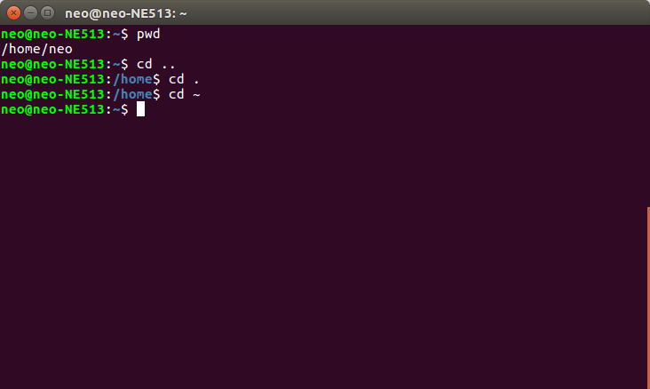
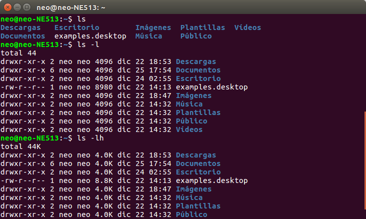

¿Qué es la terminal o CLI (command line interface) ?
La terminal nos abre un mundo de posibilidades increíbles. Desde tener una navegación avanzada entre todos nuestros nodos y archivos, hasta contar con programas previamente instalados e increíbles que solo pueden ser ejecutados desde este entorno y ni siquiera sabemos que existen.
Sí, todo carece de una interfaz gráfica que lo hace ver un poco “feo”, pero, todo, todos los recursos se enfocan a la ejecución del programa, obteniendo resultados increíblemente rápidos.
¿Qué es lo que necesitamos?
Windows: Si tienes Windows 10, puedes usar bash shell de Ubuntu directamente.
Podemos utilizar http://cmder.net/ o https://www.cygwin.com/ para obtener resultados similares.
Mac: Buscar en tus aplicaciones “Terminal” o descargar iTerm2
Linux: Dependiendo de tu distribución, es donde encontrarás la(s) terminal(es), y como usuario de Linux seguro la encontraras de inmediato.
Navegación entre directorios y listado de archivos ( pwd, cd, ls)
La primera ves que tu abres la terminal (y si antes no hiciste modificaciones), notaras que nos lleva al directorio “Home”, osea, la raiz donde tenemos todo tipo de permisos del sistema operativo.
Tenemos 3 tipos de nodos en el sistema operativo:
-Archivo -Directorio -Link
pwd: Este comado nos permite imprimir la ruta o directorio que estamos actualmente.
cd: Este comando nos permite cambiar de directorio, en algunos casos, el solo poner cd nos regresa al directorio “Home”.
cd nombre_del_directorio: Cambiamos de directorio, podemos tener un par de casos de uso con esto:
.Desde entrar a otro directorio que se encuentre por arriba de la ruta de donde encontramos: cd misfotos
Ir a un directorio aún más por arriba de donde me encuentro cd misfotos/vacaciones/personal
cd ~: Sin importar donde nos encontremos, con esto nos regresamos al directorio Home.
cd.. : Nos regresa a un directorio anterior
cd. : Nos lleva a un directorio superior
ls: Lista todos los archivos y directorios de la carpeta donde nos encontremos
La mayoría de comandos en nuestra terminal van a contar con banderas, que extiende la funcionalidad del mismo. Las agregamos con un “ - ”. Cómo por ejemplo:
ls -l : Lista todos los archivos y directorios, en forma de lista, y con información de los mismos.
ls -lt : Lista todos los archivos y directorios, en forma de lista, y con información de los mismos, agregando además, la hora en que fue creado el mismo
ls -lh: Lista todos los archivos y directorios, en forma de lista, y con información de los mismos, pero en formato más legible.
ls -lhr: Lista todos los archivos y directorios, en forma de lista, y con información de los mismos, de reversa
ls -lhS: Lista todos los archivos y directorios, en forma de lista, y con información de los mismos, pero en formato más legible, ordenado de mayor a menor peso.
ls -lhSr: Lista todos los archivos y directorios, en forma de lista, y con información de los mismos, pero en formato más legible, ordenado de menor a mayor peso.
clear: Limpia todo lo que tengamos en pantalla.
Los directorios no tiene peso por sí mismo, por lo general, tienen la referencia la suma de peso de todos los archivos contenidos por ellos. Para tener una mejor noción de cuánto pesa cada archivo y directorio, usamos el comando:
du -h -d 1
h : human readble
-h / --max-depth=1 : imprime a partir de aquí, el peso de cada archivo o carpeta


Creación de directorios, mover, copiar y renombrar archivos
mkdir “nombre” : Crea un directorio, usando como nombre la palabra que pongamos después de mkdir.
mv origen destino: Mueve un archivo o directorio, dando el punto de origen y de destino, por ejemplo:
mv DSCF7496.jpg fotos/ ( Mueve el archivo DSCF7496.jpg a la carpera fotos/ )
Nota: No olvides el alcance que tenemos en los directorios. Por ejemplo, si estamos en fotos/ y queremos mover otra foto del directorio anterior:
mv ../DSCF7498.jpg ./ ( Mueve el archivo DSCF7498.jpg que está en la carpeta padre a esta carpeta hijo )
Además, de tener atajos para mover más archivos de rutas más específicas:
mv ~/Downloads/*jpg . (Todos los archivos jpg en el directorio Downloads, muévelos al directorio donde me encuentro actualmente )
cp origen destino: Copia un archivo, dando el punto de origen y de destino, por ejemplo:
cp ../foto.jpg . ( Copia el archivo foto.jpg de la carpeta padre a la ruta donde nos encontramos )
Para renombrar archivos, usamos el comando mv, pero no especificamos rutas:
mv foto.jpg imagen.jpg (cambia el nombre del archivo foto.jpg a imagen.jpg)
touch nombredelarchivo: Abre el archivo, pero no lo modifica. Importante para actualizar las fechas de modificación de archivos existentes.
Si el archivo no existe, lo crea, por ejemplo:
touch hola.txt : Crea un archivo hola.txt
Links (Referencias de archivos o directorios ) y eliminar elementos desde la terminal
Los links o ligas, son apuntadores que hacen referencia a un directorio o archivo sin importar dónde es que se encuentren.
Se usa el comando ln -s , teniendo en cuenta primero el archivo o la carpeta a la cuál queremos hacer referencia, seguido del simbolo que queremos asignarle:
ln -s flickr_photos-csv fotos.csv
Con los links, podemos hacer cualquiera de las demás operaciones vistas anteriormente: Copiar, pegar, mover.
El siguiente comando, debes usarlo con mucho cuidado, se trata de eliminar cualquier elemento desde la terminal. Una de las diferencias que tiene con la interfaz gráfica es que no nos va a pedir verificación, borra todo de inmediato, si o si, además, no existe algo como papelera de reciclaje donde podamos recuperar los archivos eliminados.
Nunca, de los nuncas uses rm -r / (Esto borrara todo en tu disco duro).
Cómo si usarlo bien:
rm NombreDelArchivo: Elimina el archivo indicado después de rm
rm NombreDelDirectorio/* : Elimina todos los archivos que se encuentren dentro del directorio mencionado.
rm -r NombreDelDirectorio: Elimina el directorio mencionado, junto todos los archivos y más directorios que se encontrarán dentro de él.
Programas disponibles desde terminal: bc, md5, more, tail, cat, wc
bc: Aplicación de calculadora desde terminal, podemos hacer cualquier operación aritmética.
open NombreDelArchivo : Dependiendo del tipo de archivo, la terminal va a elegir el programa por defecto recomendado para abrirlo, por ejemplo, si es una imagen, en Mac, lo abrirá en preview.
open -a NombreDelPrograma NombreDelArchivo: Abrimos el archivo elegido con el programa que queremos. Ejemplo:
open -a atom index.html
md5 NombreDelArchivo: Nos permite crear una especie de huella digital de un archivo, usando el algoritmo md5. De hecho, no existe algún otro directorio o archivo en el mundo con el mismo md5
md5 calculos
more NombreDelArchivo: Esto es exclusivo para archivos de texto, nos muestra todo el contenido de un documento sin abrir un editor de texto. Si es mucho el texto, crea páginas totalmente navegables.
tail NombreDelArchivo: Esto es exclusivo para archivos de texto, muestra las últimas 10 líneas de un archivo de texto. Puedes modificar el flag para aumentar el número de lineas
tail -20 NombreDelArchivo
tail -f NombreDelArchivo: -f significa forever, quiere decir que la terminal se va a quedar escuchando el archivo hasta que suceda un cambio, cuando se haga un cambio en el archivo, va a imprimir como siempre los últimos 10 resultados.
Puedes salirte de cualquier programa en ejecución usando ctrl + c
cat NombreDelArchivo: Imprime todo el archivo, sin excepción, sin paginar. Puedes de hecho, abrir cualquier tipo de archivo binario (no solo texto)
Por cierto, dependiendo el tipo de archivo, es recomendado usar un comando u otro:
open: recomendado para archivos binarios como imágenes, videos, pdf. etc.
more, cat, tail: para archivos con texto de salida utf-8 o similares
wc NombreDelCurso: Es un contador de líneas, palabras y caracteres en ese archivo, en ese orden.
wc -l NombreDelCurso: Es un contador de líneas de un archivo
wc -c NombreDelCurso: Es un contador de caracteres de un archivo
Documentación disponible desde terminal ( man )
Si usamos el comando man seguido del nombre del comando del cual que queremos saber más, tenemos como resultado una documentación bastante detallada junto con todas sus banderas disponibles y ejemplos de uso. Man no depende de internet y muy útil para descubrir nuevos comandos.
Monitoreo de procesos desde la terminal
La arquitectura de un sistema operativo Linux / *Nix nos permite identificar en qué carpeta se encuentran todos esos comandos ejecutables que hemos estado usando, basta con ejecutar el comando:
echo $PATH
Además con which NombreDelComando, podemos obtener el directorio donde ese comando en especifico es ejecutado. Ejemplo:
which cat
top : Es un comando que nos permite saber, segundo a segundo, que procesos están corriendo en nuestro ordenador.
PID (Process ID): es un identificador numérico que se le asigna a cada proceso que se está ejecutando en nuestro ordenador.
Para saber ese PID, en nuestro proceso, agregamos un &.
Teniendo ese PID, podemos matar ese proceso con el comando:
kill -9 PID
Volviendo a los procesos, existe una forma de identificar los procesos que se han estado ejecutando:
ps -wA
Busqueda de contenido, archivos, carpetas y uso de Grep Standard Input, Standard Output y Standard Erro
Independiente del lenguaje, cualquier programa tiene un flujo de entrada de datos, un flujo de salida y un modo de capturar errores.
En la terminal, podemos tener este mismo flujo de datos gracias a “<” y “>”.
Nuestro ejemplo fue:
bc -q < operaciones.bc > resultado
De un archivo llamado operaciones.bc, abrelo usando bc, y el resultado, mandalo a resultado
Busqueda de contenido, archivos, carpetas y uso de Grep
En este último ejercicio, vamos a practicar cómo buscar dentro de:
Un archivo de texto
Varios archivos de texto que se encuentren en un directorio
Todo el árbol de directorios, que el nombre de los archivos coincidan con la búsqueda
Todo gracias a grep
Búsqueda dentro de un archivo de texto
cat Archivo | grep TerminoDeBusqueda
Estamos leyendo todo el archivo, y por medio de grep, solo filtramos lo resultados de acuerdo al Término de Búsqueda
Para ser más concretos con la búsqueda, podemos usar expresiones regulares:
cat Archivo | grep ,TerminoDeBusqueda$
Y recordando el standard output, podemos mandarlo a un archivo de texto: